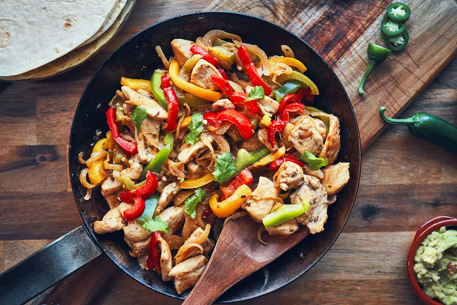

Spiced-up Recipes
Here you will find my favorite recipes that I have been perfectioning for amazing flavor and spicenness
Check them out!
Fajitas

Chicken fajitas are an easy and flavorful weeknight meal. A classic Mexican recipe, juicy chicken is seasoned, seared and cooked
to perfection, then tossed with sauteed bell peppers and onions. A squeeze of fresh
lime adds a punch of flavor and the chicken fajitas are served with warm
tortillas and toppings. You can't beat this healthy family favorite recipe.
- Ingredients
-
- Chicken
- Seasoning
- Onion
- Peppers
- Corn Tortillas
- Olive Oil
- Steps
-
- Season the chicken. Generously sprinkle the fajita seasoning on both sides of the chicken and use your fingers to press it in.
- Cook the chicken. Heat a large skillet over medium heat and lightly coat it with a drizzle of olive oil or avocado oil. Sear the chicken breasts for about 7-8 minutes on each side.
- Saute the bell peppers and onion. While the chicken is cooking, cut the bell peppers and onions into thin slices.
- Mix together.
- Wrap it up. Serve immediately with tortillas and extra toppings.
Go back for more recipes